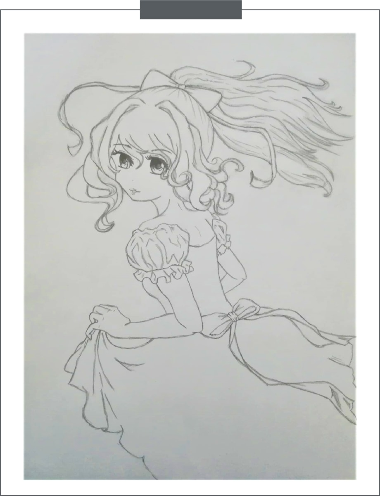
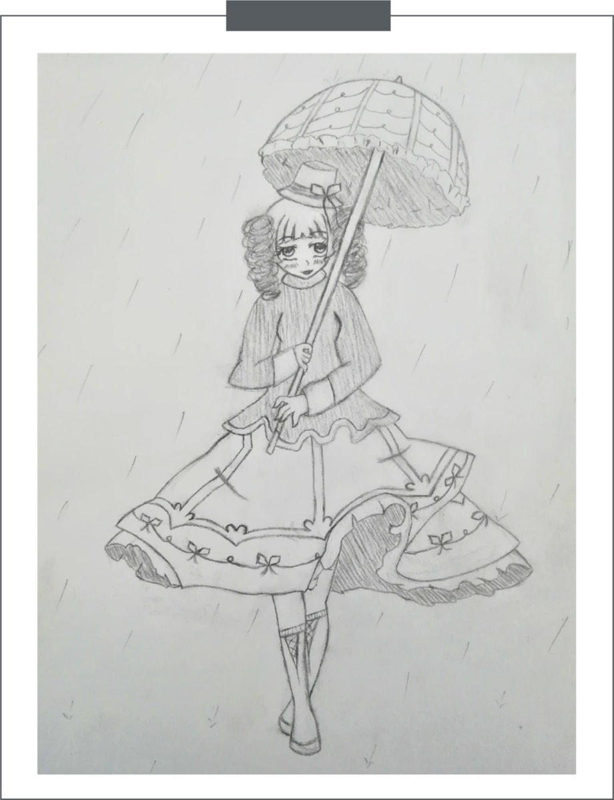
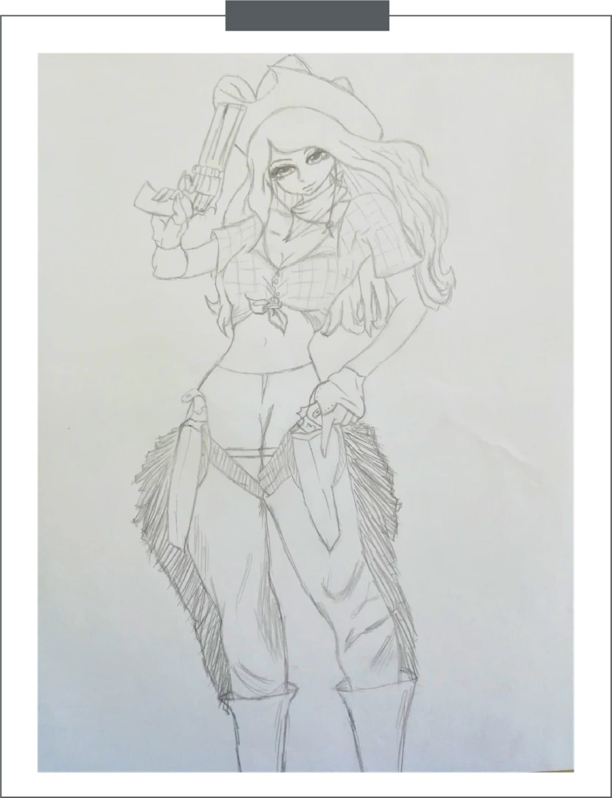
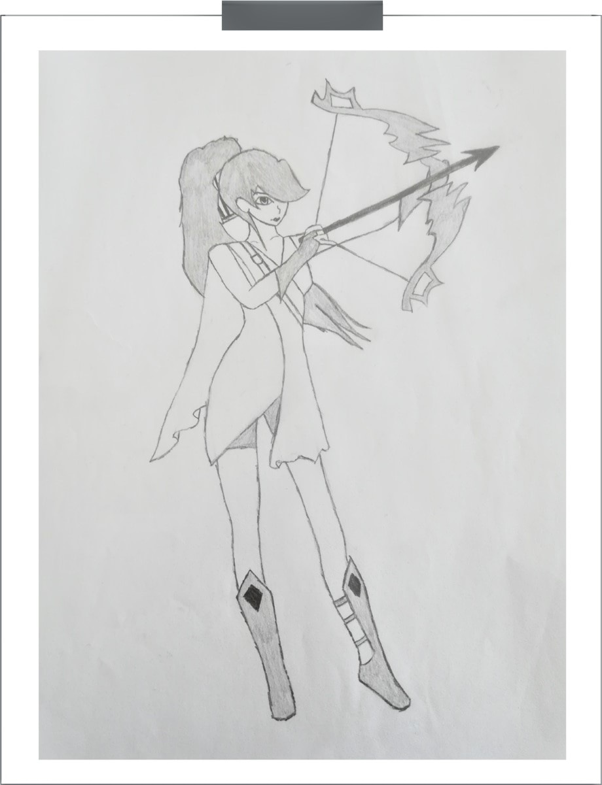
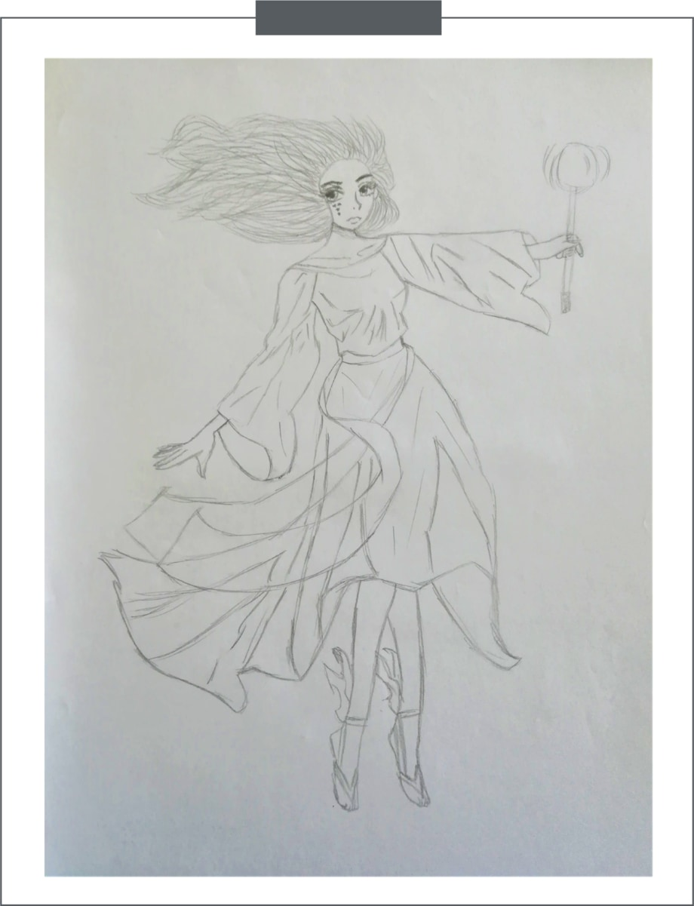
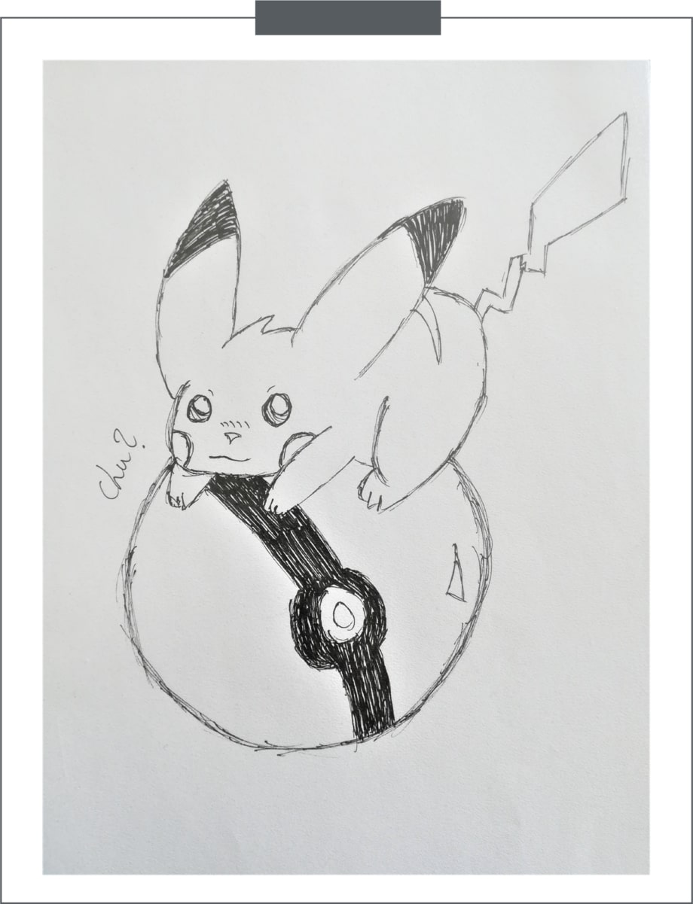
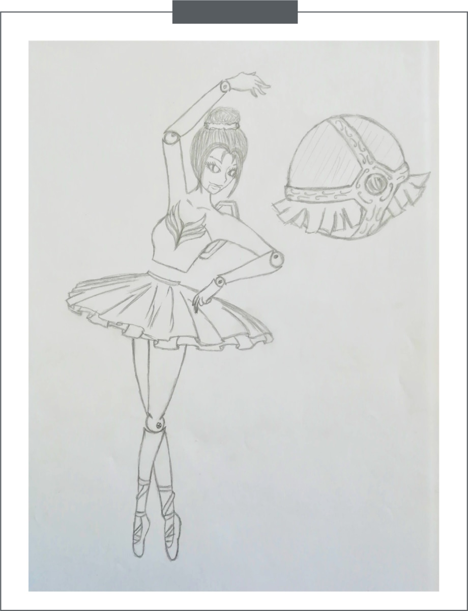
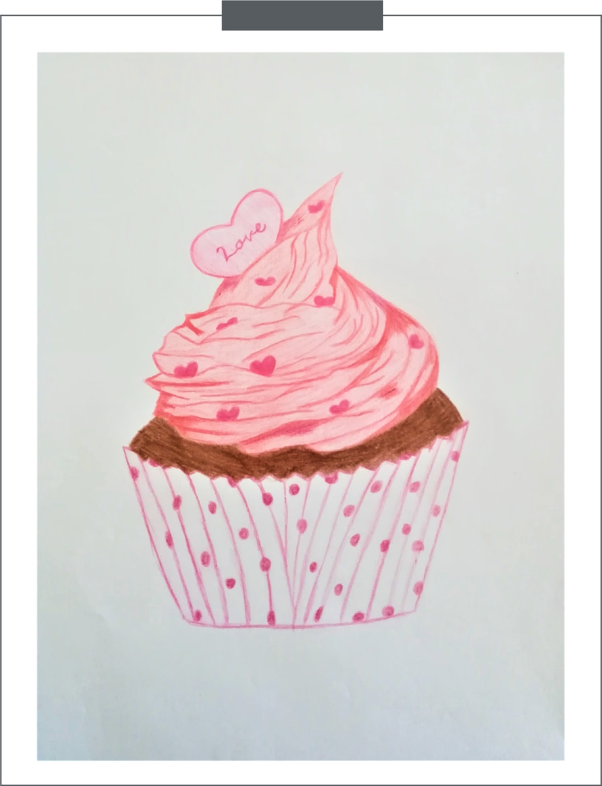

Som udgangpunkt blev denne skitse,
skitseret i forbindelse med,
at blive bedre til at tegne krøller.
Lucys outfit er med inspiration
fra det klassiske eventyr, Askepot.
Lucy
Juvia
Cowgirl Miss Fortune
Ashe
Janna
Chu?
Ballerina Orianna
Cupcake of Love
